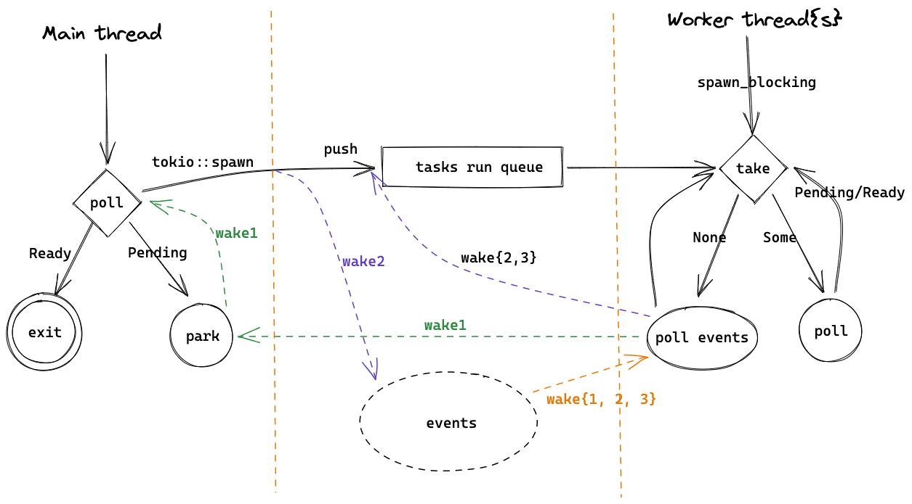

Tokio 概览
初识 Tokio
Tokio 是一个 Rust 异步运行时库，底层基于 epoll/kqueue 这样的跨平台多路复用 IO 以及 event loop，目前正在支持 io_uring。它的 scheduler 和 Erlang/Go 实现的 N:M threads 类似，线程会执行 Task，可以充分利用多核。Task 是 Rust 基于 Future 抽象出的一种绿色线程，因为不需要预先分配多余的栈内存，可以创建大量 task，很适合做 IO 密集型应用。
虽然如 1.1 所说，Rust 本身不提供异步运行时，但因为 Rust 强大的 macro，我们可以非常方便地使用如 Tokio 这类第三方的 runtime。
#[tokio::main] async fn main() -> Result<(), Box<dyn Error>> { let listener = TcpListener::bind("127.0.0.1:8080").await?; // listen loop { let (mut socket, _) = listener.accept().await?; // async wait for incoming tcp socket tokio::spawn(async move { // create async task and let Tokio process it let mut buf = vec![0; 1024]; loop { // read and write data back until EOF let n = socket.read(&mut buf).await?; // async wait for incoming data if n == 0 { return; } socket.write_all(&buf[0..n]).await?; // async wait socket is ready to write and write data } }); } }
如上边这段代码，在 Tokio 中可以很容易地写一个常见的 TCP server，主线程 listen 端口，并在循环中接受连接，每一个连接的处理都在一个 Future 中完成，当等待 IO 时，这个 future 会让出 CPU 给其他 future，于是我们就有了一个高性能、高并发的 TCP server。之后代码解读也会以这段代码为示例。
架构概览
这里的 "magic" 就在 #[tokio::main] 这个宏，它会把代码预处理成这样：
fn main() { tokio::runtime::Builder::new_multi_thread().enable_all() .build().unwrap() .block_on(async { // async main }) }
程序启动后，在 build 中会初始化各种需要的数据、IO 资源，以及启动 worker 线程，然后在主线程中运行 async 代码 block，也就是我们自己写的那个 async main。
 link
上图大致描绘了以 echo 这个 example 为例的一个 Tokio runtime 的大致架构，对于理解 Tokio 很有帮助，之后的讲解也会再次提及。
图右的 worker 线程数量一般和核数相同，会执行 tokio::spawn 提交的 futures，当没有可执行的 task 时，会通过 epoll/kqueue 来 poll events，这部分工作由 reactor 负责。当被 events 唤醒后，会继续尝试执行 tasks，并这样循环下去。
在图的左边，runtime 在主线程 block_on 中会 poll 我们的 main 函数 future，执行到 listener.accept().await? 会返回 Pending，于是主线程会被挂起（park），在这里是等待信号量并休眠。接下来是三个事件：
-
（wake1）当收到 TCP 连接时，worker thread 会在
poll events中拿到 events，并发送信号量给主线程。主线程会从park中被唤醒，然后执行tokio::spawn。worker 线程会继续循环，也就是 poll events。 -
（wake2）主线程在
tokio::spawn中会先把 TCP 连接的 future 放到 run queue 中，然后唤醒 worker thread，再回到等待 TCP accept 中。worker 线程被唤醒后会从 run queue 中取出 task 并执行，也就是let mut buf = vec![0; 1024];开始的那段代码。当 worker 线程执行
socket.read(&mut buf).await?时，因为还数据还没有准备好，不能 read，会返回Pending，再执行其他 tasks 或者等到 IO events。 -
（wake3）当 OS 收到 TCP 数据时，worker 线程会收到 events，并把之前未执行完的 task 放到 run queue 中，然后从 run queue 中取出并执行，这里会调用 syscall
read读取收到的数据，最后把数据写回 client。随后如果客户端关闭了连接，这个 task 就执行结束，worker 线程就会执行其他 task 或者等待 events。
这里有两个值得注意的地方。第一， tasks run queue 是有多个的，包括每个 worker 自己的 queue 和 global queue，worker 会优先从自己 queue 中取 task，在 3.2 中会详细讲解。另一个是，多个 worker 线程会并发地执行 tasks，但只有一个 worker 线程会作为 reactor 来 poll events，新的 events 可能是由 reactor 自己，也可能是由其他 worker 线程来执行对应的 future。
代码目录和结构
从 Cargo.toml 可以看出 Tokio 是一个包含了多个子 package 的 workspace，主要包括 tokio, tokio-macros, tokio-stream, tokio-util 和测试、examples 等其他代码。tokio-stream 是 Stream 的实现，tokio-util 是给 Tokio 的使用者用的，我们先暂时不管，所以主要的代码在 tokio 和 tokio-macros 两个子 package，我们看下它们的代码量：
#![allow(unused)] fn main() { ------------------------------------------------------------------------------- Language files blank comment code ------------------------------------------------------------------------------- tokio/src Rust 256 6332 23616 26233 tokio-macros/src Rust 3 50 266 410 }
代码主要集中在 tokio 中，另外还有差不多数量的 comment，可见文档和注释写的非常多。一共有2万多行代码，不算很多，也包含了不少测试代码，还有部分代码是用来实现一些标准库对应的异步版本，所以实际上我们一开始需要关注的代码量没有很多。
另外，还有一些主要的依赖：
- bytes: 处理 bytes 的工具
- mio: 封装了跨平台的 IO 操作，比如 epoll, kqueue 等
- parking_lot: 实现了很多同步原语，如锁、信号量
我们看一下 tokio 的子模块：
.
# core
├── lib.rs // library file
├── blocking.rs // 提供 blocking 操作的封装
├── coop.rs // 帮助实现更好的协同式调度
├── future // future 操作的一些封装
├── park // 类似于 std::thread::park，但更加通用
├── runtime // Tokio runtime 的核心，包括 event loop，任务管理、调度，线程池等等
├── sync // 让不同 task 用来进行同步的工具，如 channel 和 Mutex
├── task // 上文介绍的 task
# async std in Tokio
├── io // IO 操作的封装，相当于异步的 std::io，也是构建 net、fs 等子模块的基础
├── net // TCP/UDP/Unix 的封装，类似于 std::net
├── fs // 异步的 std::fs
├── process // 异步进程管理，比如可以异步地运行一个子进程，类似于 std::process
├── signal // 异步的信号处理，如 ctrl-c
├── time // 时间相关的模块，如 Sleep
# utils
├── loom // 统一了 std 和 loom(github.com/tokio-rs/loom) 的接口来方便测试
├── macros // 一些公用的 macro，主要是声明宏。而 tokio-macro 主要是过程宏
└── util // tokio 内部代码通用的工具模块
一开始我们主要关注 core 部分的模块、echo example 涉及的 io 和 net 模块，以及代码涉及到的 macros 和 util 模块。
另外，Tokio 里用到一些 feature flag 来允许定制化一些功能，如 rt-multi-thread 会开启多线程调度器， full 会开启几乎所有 feature，实际当中也可以根据需要关闭一些。